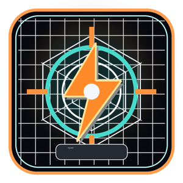
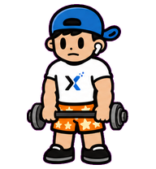
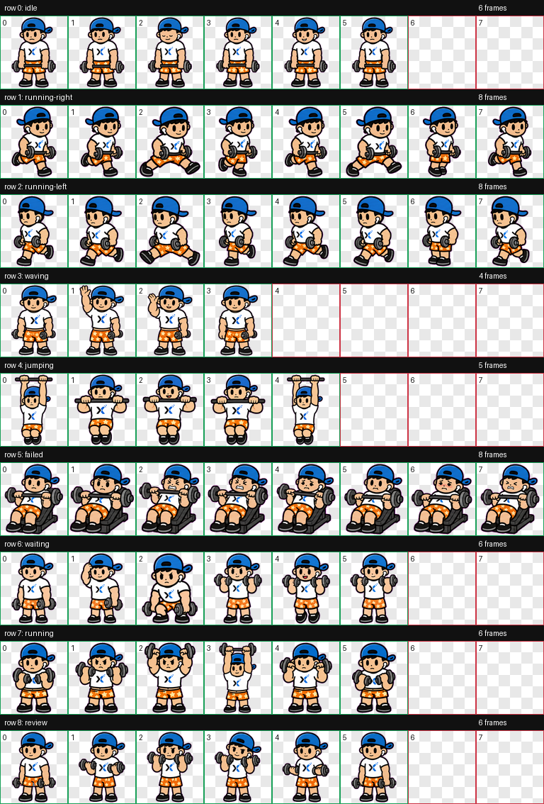

杨锟 / Skyler Yang
中南大学计算机学院信息安全本科，专业成绩 83.2/100，前 30%。正在寻找 AI 产品经理与 AI 应用开发相关机会。
我更关注从问题定义到产品落地的完整链路：能拆需求，也能写代码；能快速验证，也能沉淀方法。
中南大学计算机学院信息安全本科，专业成绩 83.2/100，前 30%。正在寻找 AI 产品经理与 AI 应用开发相关机会。
需求调研、竞品分析、PRD、原型设计，能够把模糊想法拆成可执行的功能路径。
熟悉 SwiftUI、Python、网页开发和大模型 API 集成，能独立推进轻量产品从 0 到 1。
习惯用 AI 工具和工程实现快速搭建可体验原型，用真实反馈校准产品判断。
具备问题解决、技术分析、文档撰写和项目推进能力，能把探索过程沉淀成团队可复用资产。
用产品视角组织功能，用工程能力完成交付。每个项目都尽量呈现问题、功能、设计取舍和最终可体验入口，而不是只放一个好看的图标。

从市场调研、需求拆解到 iOS 开发与上线，独立完成 AI 健身训练助手。新版把重点推进到训练动作分析：用户可在训练中获得动作识别、打分和反馈，让 AI 不只会生成计划，也能参与训练过程。
核心场景：面向想开始健身但缺少指导的用户，把训练计划、动作分析、饮食建议、历史记录和阶段复盘组织成更容易坚持的日常流程。
核心功能：基于 Apple Vision 识别训练动作，进行动作完成度分析、评分与反馈；同时支持训练历史、AI 饮食建议和 Apple Watch 配套体验。
产品取舍：优先做低门槛输入和明确反馈，不把 AI 回复做成大段文本，而是让建议尽量接近下一次训练可以执行的动作修正。
一款 AI 加持的治愈向叙事 Web 游戏。大断联后的第 7 年，玩家经营小镇上最后一家书店，通过倾听来客故事、推荐合适书籍，影响希望值、声誉和 4 种结局。新增「书中剧场」与「自由书库」，让游戏从叙事扩展为可探索的阅读入口。
玩法闭环：7 天循环，6 位 NPC、24 本书、3 槽 localStorage 存档、4 种结局；一周目约 25 分钟，浏览器打开即玩。
AI 集成：NPC 写实立绘（呼吸动画 + 淡入效果）、自由对话、书籍 AI 导读、每日店主日记；书中剧场 v4.0 支持左立绘 + 右对话的视觉小说体验，自由书库与我的书店扩展阅读入口。
工程取舍：纯 HTML / CSS / 原生 JS 零构建；GitHub Pages 静态托管 + Vercel Serverless 代理 AI 请求，API Key 安全不暴露；所有 AI 调用有 timeout 与本地 fallback，断网也能完整游玩。

围绕 FPS 玩家“我有没有电竞天赋”的好奇心，设计 6 项轻量挑战，把反应、准星、节奏感等能力转化成可以在手机上快速完成的互动测试。
核心功能：覆盖反应速度、极限手速、视野广度、动态追踪、顺序记忆、手眼协调 6 个维度，每项 30 秒内完成挑战，并记录本地历史最佳成绩。
产品设计：采用黑橙电竞 HUD 视觉、移动端优先交互和即时反馈动效，让测试工具更像一个可分享的小型游戏。
体验要求：支持抖音 APP 38.2.0 及以上版本，建议使用抖音扫码打开体验。

自创健身小人形象，并制作成 Codex 动态桌宠资源包。它更像一个“小型品牌资产实验”：从角色设定、动作切片到可安装配置都完整交付。
视觉设定：蓝色反戴帽、白色 T 恤、橙色短裤和哑铃动作，做成一套能在 Codex 里使用的动态桌宠资源。
交付内容：包含 spritesheet.webp、pet.json 和动作预览图，覆盖 idle、running、waiting、review 等多种 Codex 状态。
使用方式：下载后在 Codex 更新到最新版，进入设置，在“外观”下拉中找到自定义宠物并选择 Codex Buddy。

持续整理 AI 产品方法论、行业研究、面试准备和技术学习。它不是资料堆叠，而是把求职、学习和项目复盘变成可检索、可追踪的个人知识系统。
内容结构：围绕 AI 产品、行业案例、岗位准备和项目复盘建立索引，让输入内容可以被持续检索和复用。
沉淀价值：把临时学习变成长期资产，也让面试官能看到我如何拆问题、追趋势和复盘自己的作品。
欢迎联系我聊 AI 产品、应用开发或实习机会。也可以通过抖音了解更多日常动态。

扫码关注